list_of_membrane_offsets = [
1.0, 1.0, 1.0, 1.0, 1.0, 1.0, 1.0, 1.0,
1.0, 1.0, 1.0, 1.0, 1.0, 1.0, 1.0, 1.0,
-1.0, -1.0, -1.0, -1.0, -1.0, -1.0, -1.0, -1.0,
-1.0, -1.0, -1.0, -1.0, -1.0, -1.0, -1.0, -1.0,
... but like 44 thousand times for each second of music. get typing buckaroo.
]
play(list_of_membrane_offsets)What are samples?
A Speaker
A speaker is a device that wiggles air to make sound. It uses an electromagnet to displace a diaphragm a lot of times per second. That wiggling rate out and in determines the sound we hear.
If it wiggles fast, we hear a high pitch sound. If it wiggles slow, we hear a low pitch sound.
The device that moves the speaker membrane is a computer, and the way you tell it how to position the speaker membrane is by feeding it a list of membrane positions. Offsets.
Thats what music is. Its a long list of membrane offsets. These are called samples.
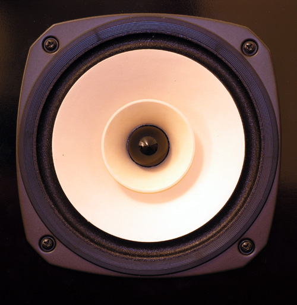
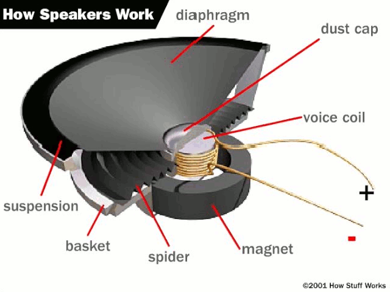
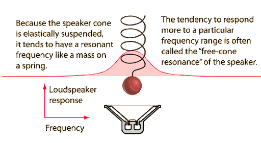
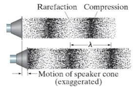
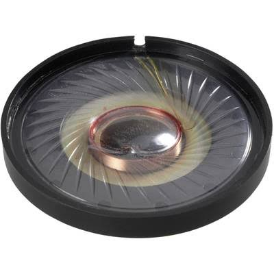
So on the Game Boy theres two parts to this.
- Generate a list of numbers.
- Send that to the wiggler (amplifier).
Actually you have to send the numbers to the wiggler one at a time, and at the right speed, but you get the idea. Lets look at some lists of numbers (music).

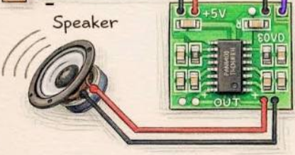
Waveforms
Youve probably seen waveforms before. They look continuous because you see so many samples at once. Its zoomed out. But a waveform really is just a list. You can see some discrete samples in the zoomed-in pictures here.
Youre probably thinking now, well if I want my sound to sound good I need a lot of samples, and youre right. If you try to make a wave with too few samples, it wont be able to represent the sound you want to make.
Thats the resolution of your sound wave. Its samples per second.
The standard we use here is 44,100 samples per second. Its the old CD audio rate. I dont know the whole ancient-history argument by heart, but you can go read about it here.
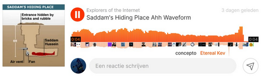
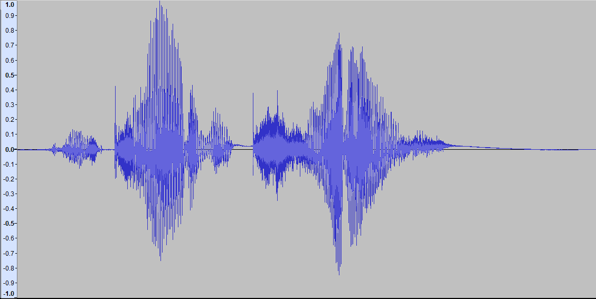
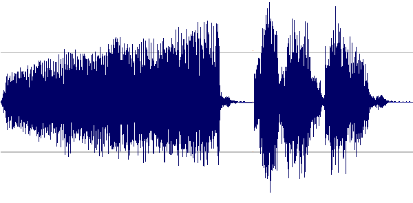
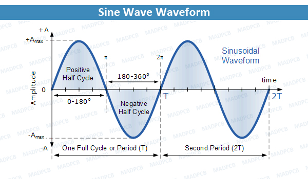
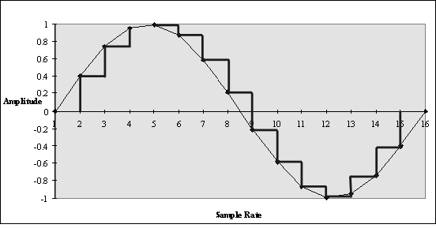
What are some of your favorite lists of numbers that you listen to? I like [145, 0, -145, 0, 145, 0, -145, 0...] by The Shaggs. If i'm being honest it doesn't sound very good. (Would you be able to identify any song by just looking at the first n samples in its waveform? Hmmmm)
Samples to diaphragm wigglage
Heres a toy to play with because youre like 5 years old. To put it simply, youre a fucking idiot. Look at how the frequency changes the pattern of the offsets in the samples, but doesnt change the distance between them? Yeah I bet you noticed that youre so smart. 👁️👄👁️ The sample rate is fixed. We just change the offset magnitudes. Volume is the total offsets up and down, and the pattern makes the character of the sound.
diaphragm offset: 0.000
moving diaphragm
rest position
back
forward
Sound character is infinitely complex, and the Game Boy isnt that good at making complex lists of numbers, so you dont have a lot to work with. Were gonna start with the dumbest version, which is a square wave.
The Code
A square wave is just the speaker jumping between two offsets. Its called a square wave cuz its got corners like a square, but its actually more of a rectangle wave. Anyways the frequency determines how many highs then how many lows in a row. You can type the waveform manually like a monkey. behold:
My fingers hurt. Lets generate the samples procedurally.
sample_rate = 44100
frequency = 220
volume = 0.4
seconds = 1
num_samples = seconds * sample_rate
samples = []
# samples will become our waveform:
# a list of speaker offsets.
for sample_index in range(num_samples):
# Which moment in time is this sample for?
#
# sample_index = 0 is time 0.0 seconds.
# sample_index = 22050 is time 0.5 seconds,
# halfway through the first second.
# sample_index = 44100 is time 1.0 seconds.
time = sample_index / sample_rate
# frequency * time tells us how many cycles have passed.
cycles = frequency * time
# % 1 keeps only the fractional part of the cycle.
#
# 0.00 means the cycle just started.
# 0.25 means the cycle is one quarter done.
# 0.50 means the cycle is halfway done.
# 0.99 means the cycle is almost over.
cycle_position = cycles % 1
# A square wave is high for the first half of the cycle,
# then low for the second half.
if cycle_position < 0.5:
sample = volume
else:
sample = -volume
# Store this offset in the waveform list.
samples.append(sample)Heres what that code spits out. This bigass list of samples. The full list has 44,100 numbers. Heres some of them.
samples = [
0.400, 0.400, 0.400, 0.400, 0.400, 0.400, 0.400, 0.400,
0.400, 0.400, 0.400, 0.400, 0.400, 0.400, 0.400, 0.400,
0.400, 0.400, 0.400, 0.400, 0.400, 0.400, 0.400, 0.400,
0.400, 0.400, 0.400, 0.400, 0.400, 0.400, 0.400, 0.400,
0.400, 0.400, 0.400, 0.400, 0.400, 0.400, 0.400, 0.400,
0.400, 0.400, 0.400, 0.400, 0.400, 0.400, 0.400, 0.400,
0.400, 0.400, 0.400, 0.400, 0.400, 0.400, 0.400, 0.400,
0.400, 0.400, 0.400, 0.400, 0.400, 0.400, 0.400, 0.400,
# ...44,036 more numbers for this one-second waveform
]How do we make our samples get sent to the speaker?
On the Game Boy, its just the Game Boy CPU generating meta parameters for a procedure that spits out samples, and then that flips voltage on a bus of wires to toggle the speaker controller. On a big boy PC you gotta go through like 50 intermediate stages.
Game Boy
CPU writes sound parameters
audio hardware generates wave
voltage changes
speaker membrane
Big boy PC
samples
audio library
OS mixer
audio device
voltage
speaker membrane
We dont need to code all that shit, nor want to, just import your library and call the function. Heres what that might look like.
Python
import sounddevice as sd
sd.play(samples, samplerate=44100)
sd.wait()const audio = new AudioContext();
const buffer = audio.createBuffer(1, samples.length, 44100);
buffer.copyToChannel(Float32Array.from(samples), 0);
const source = audio.createBufferSource();
source.buffer = buffer;
source.connect(audio.destination);
source.start();const audio = new AudioContext();
const buffer = audio.createBuffer(1, samples.length, 44100);
buffer.copyToChannel(new Float32Array(samples), 0);
const source = audio.createBufferSource();
source.buffer = buffer;
source.connect(audio.destination);
source.start();ma_device device;
ma_device_config config = ma_device_config_init(ma_device_type_playback);
config.sampleRate = 44100;
config.playback.format = ma_format_f32;
config.playback.channels = 1;
config.dataCallback = send_samples_to_device;
ma_device_init(NULL, &config, &device);
ma_device_start(&device);AudioDevice device;
device.open(44100, 1);
device.write(samples.data(), samples.size());
device.drain();var wave = new BufferedWaveProvider(new WaveFormat(44100, 16, 1));
wave.AddSamples(ToInt16Bytes(samples), 0, samples.Length * 2);
using var output = new WaveOutEvent();
output.Init(wave);
output.Play();AudioFormat format = new AudioFormat(44100, 16, 1, true, false);
SourceDataLine line = AudioSystem.getSourceDataLine(format);
line.open(format);
line.start();
line.write(toPcm16(samples), 0, samples.length * 2);
line.drain();val format = AudioFormat(44100f, 16, 1, true, false)
val line = AudioSystem.getSourceDataLine(format)
line.open(format)
line.start()
line.write(toPcm16(samples), 0, samples.size * 2)
line.drain()let engine = AVAudioEngine()
let player = AVAudioPlayerNode()
let buffer = makePCMBuffer(samples, sampleRate: 44100)
engine.attach(player)
engine.connect(player, to: engine.mainMixerNode, format: buffer.format)
try engine.start()
player.scheduleBuffer(buffer)
player.play()ctx, ready, _ := oto.NewContext(44100, 1, 2)
<-ready
player := ctx.NewPlayer(bytes.NewReader(floatSamplesToPCM16(samples)))
player.Play()let (_stream, handle) = OutputStream::try_default()?;
let sink = Sink::try_new(&handle)?;
let source = SamplesBuffer::new(1, 44100, samples);
sink.append(source);
sink.sleep_until_end();buffer = AudioBuffer.new(samples, sample_rate: 44_100, channels: 1)
device = AudioDevice.default
device.play(buffer)
device.wait$wav = Wav::fromFloatSamples($samples, 44100);
file_put_contents("tone.wav", $wav);
AudioDevice::default()->playFile("tone.wav");local sound = love.sound.newSoundData(#samples, 44100, 16, 1)
for i, sample in ipairs(samples) do
sound:setSample(i - 1, sample)
end
love.audio.play(love.audio.newSource(sound))final bytes = floatSamplesToWav(samples, sampleRate: 44100);
final player = AudioPlayer();
await player.setAudioSource(BytesAudioSource(bytes));
await player.play();samples
|> PCM.encode(sample_rate: 44_100, channels: 1)
|> PortAudio.play()main = do
device <- openDefaultDevice 44100 1
writeSamples device samples
drain devicelibrary(audio)
play(audioSample(samples, rate = 44100))
wait()using PortAudio
stream = PortAudioStream(0, 1; samplerate=44100)
write(stream, samples)var device = try AudioDevice.open(.{
.sample_rate = 44100,
.channels = 1,
});
try device.write(samples);
try device.drain();Every sound you ever heard on a computer was just a stupid ass list of numbers. But like, different numbers in different orders man. (Fuck you) Alright lets go procedurally generate some different flavors in the next chapter.